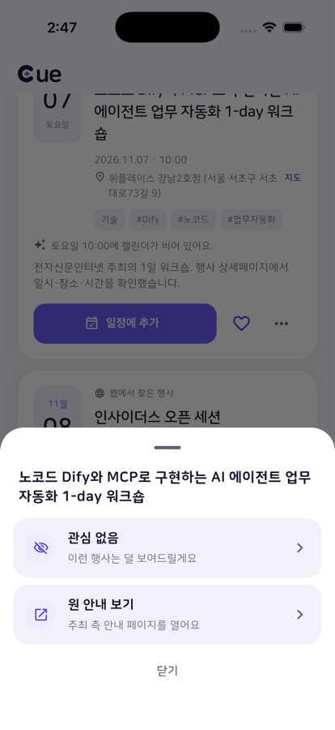
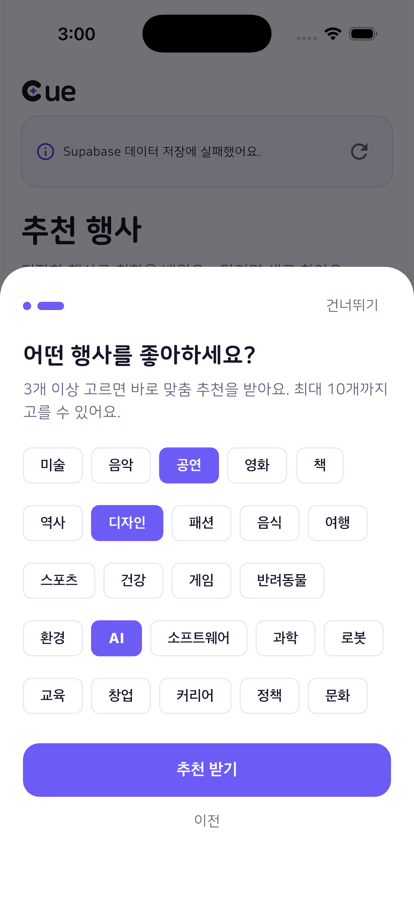
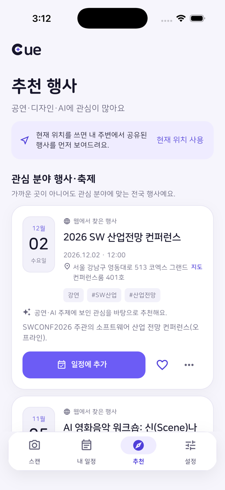

작동 방식
사진 한 장이면 충분해요
포스터·공지·문서를 고르면 행사인지부터 확인하고, 확인한 일정만 캘린더에 들어가요.
STEP 1
AI 행사 판별포스터·공지 인식STEP 2
일정 자동 추출날짜·시간·장소STEP 3
사용자 확인후보 선택·수정STEP 4
캘린더 저장알림까지 한 번에STEP 5
맞춤 추천행동 기반 개인화
일정 만들기
복잡한 안내문도
복잡한 안내문도
정확한 일정으로
AI가 읽은 내용은 저장 전에 모두 확인하고 고칠 수 있어요. 저장 버튼을 누른 일정만 캘린더에 들어가요.
- 사진, PDF, 한글 파일 모두촬영하거나 사진첩·PDF·HWP·HWPX에서 골라요. 행사 안내물이 아니면 더 분석하지 않아요.
- 여러 회차는 후보로날짜·시간·장소가 다른 회차를 나눠 보여주고, 가고 싶은 하나를 골라요.
- 전시·팝업 같은 기간형 행사운영 시간과 휴관일을 읽어 실제로 갈 수 있는 날과 시간을 정하게 도와줘요.
- 지도·날씨·길찾기다음 일정의 장소를 앱 안 지도로 보고, 그 시간 날씨와 도보·차량 경로를 확인해요.

맞춤 추천
저장할수록 나에게
저장할수록 나에게
맞는 행사가 보여요
추천 탭을 처음 열면 연령대와 관심 분야를 묻고, 그다음부터는 저장·관심 표시 같은 행동으로 취향을 배워요.
- 이번 주 비어 있는 시간에캘린더의 빈 시간에 열리는 행사를 먼저 보여줘요. 일정 제목은 읽지 않아요.
- 내 지역 행사·축제활동 지역 가까이에서 열리는 행사와 축제를 모아요.
- 관심 분야는 전국에서한국관광공사 축제 정보와 공식 안내 페이지에서 찾은 행사를 함께 추천해요.
- 비슷한 사람들이 저장한 행사같은 학교·연령대·지역의 여러 사람이 저장한 행사를 사람 수로만 알려줘요.


개인정보
필요한 만큼만 다뤄요
로그인 없이 익명 계정으로 바로 시작해요.
사진은 남기지 않아요사진과 문서는 행사 정보를 읽기 위해 서버를 거쳐 AI로 전달되고, 서버 디스크에 저장하지 않아요.
정확한 위치는 저장하지 않아요허용한 경우에만 대략적인 활동 지역을 쓰고, 생년월일 대신 연령대만 받아요.
내 일정은 내 캘린더에Cue 기록은 설정에서 언제든 지울 수 있고, 캘린더에 저장한 일정은 그대로 남아요.
Flutter · iOSNode.js APISupabaseOpenAIKakao 로컬한국관광공사 TourAPI